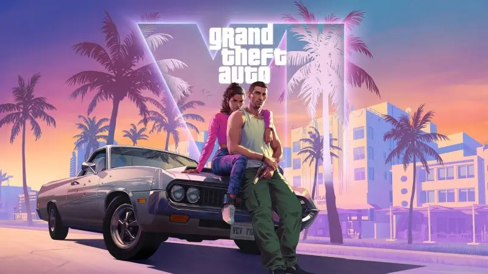

.jpg)
Todo lo que sabemos hasta ahora del nuevo videojuego de Rockstar

El Grand Theft Auto VI demostró una vez más por qué es el título más esperado de la historia de los videojuegos. En un tráiler lleno de acción y detalles espectaculares ambientados en el estado de Leonida, Rockstar Games superó todas las expectativas para mostrar la nueva entrega de la franquicia.
La espera ha sido larga. La comunidad de jugadores presionó durante años y generó miles de rumores en internet. "Queríamos asegurarnos de crear una experiencia inmersiva sin precedentes en el mundo abierto" , declaró el equipo de desarrollo tras el lanzamiento del primer adelanto.
Como señala la revista
IGN
en su análisis del avance:
El nivel de detalle gráfico y la vida en Vice City han vuelto a fijar un nuevo estándar en la
industria.
El desenlace y los protagonistas
Tras la presentación, los analistas examinaron cada fotograma. La introducción de IA avanzada en los PNJs promete un comportamiento súper realista en la ciudad. La historia girará en torno a la pareja criminal formada por Lucia y Jason, desatando la locura entre los fans de la saga.
"Este juego no tiene techo. Cuando parece que ya lo hemos visto todo en la industria, volvemos a encontrar la innovación necesaria para revolucionar el entretenimiento digital."
Meses después, las filtraciones oficiales confirmaron que el mapa será el doble de grande que el de Los Santos, asegurando que el verdadero espíritu de Vice City vuelva por todo lo alto.